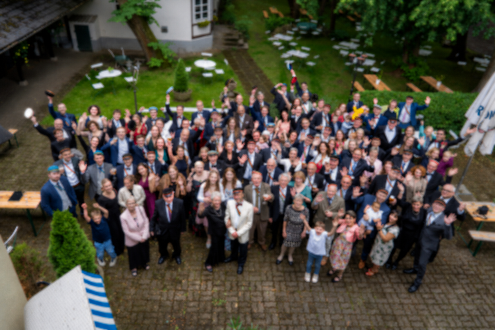
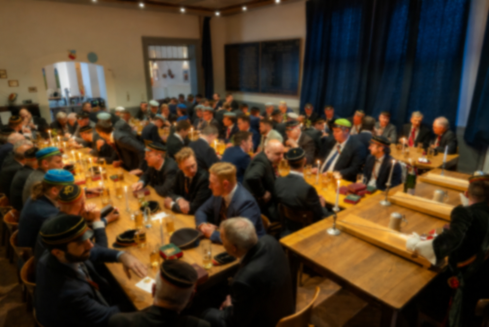
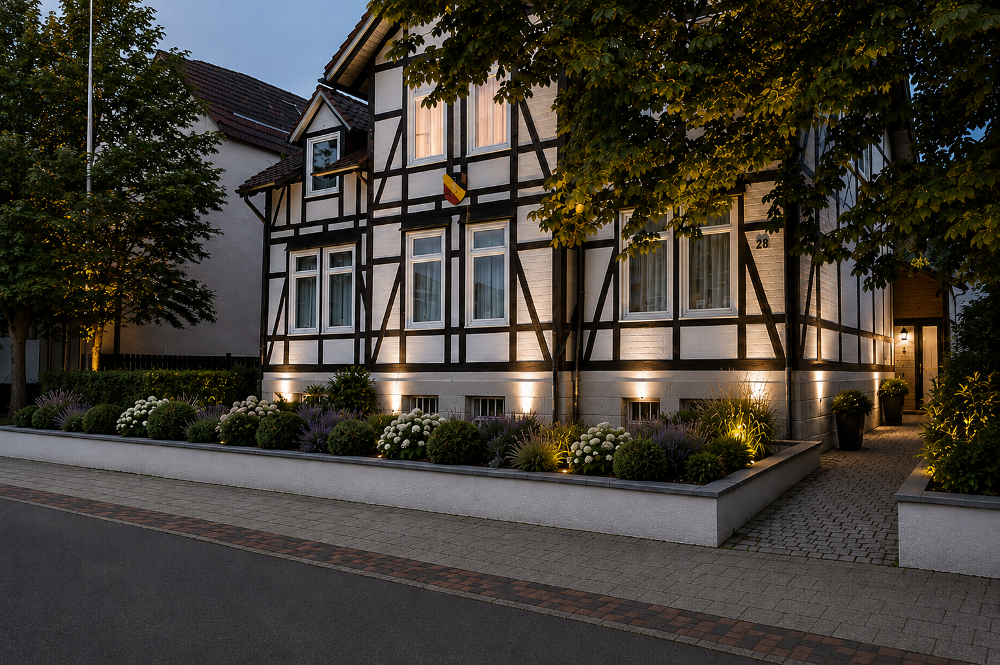
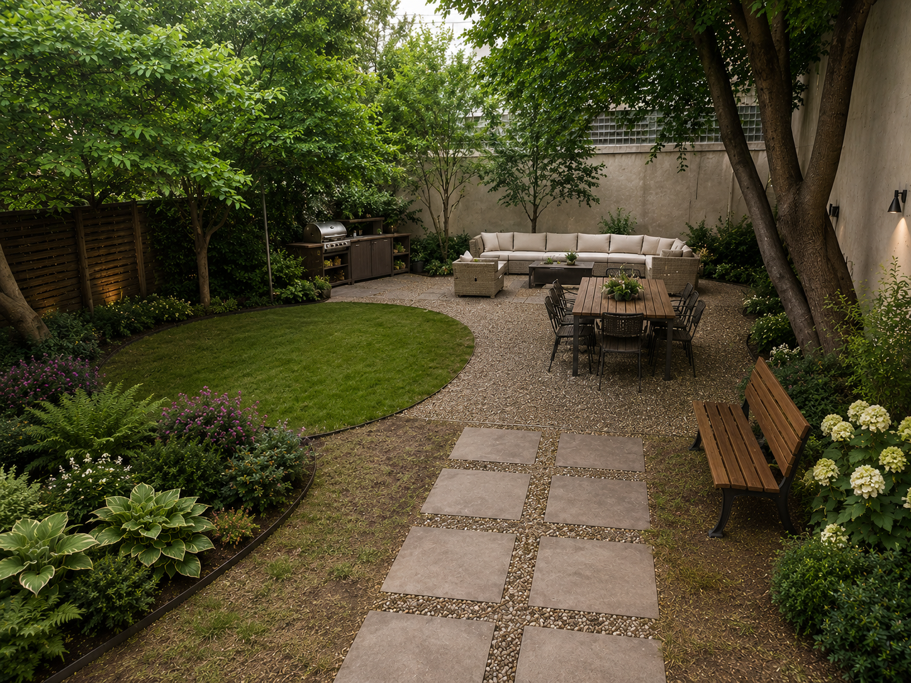
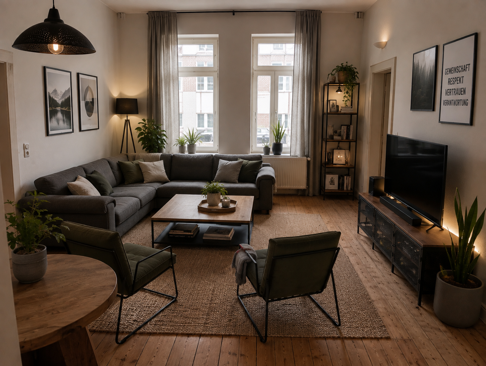
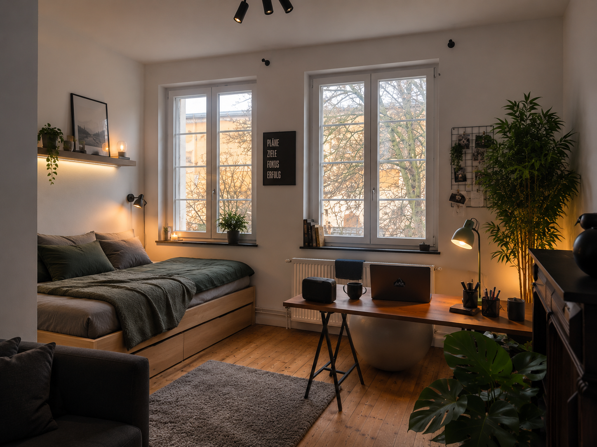

Studium
Gemeinsam lernen, Wissen teilen und das eigene Ziel konsequent verfolgen.


Per aspera ad astra
Mehr als eine WG. Gemeinschaft, Freundschaft und Verantwortung während des Studiums in Braunschweig und weit darüber hinaus.
Gemeinschaft
Bei uns treffen Studenten unterschiedlicher Fachrichtungen, Semester und Persönlichkeiten aufeinander. Wir unterstützen uns bei Prüfungen, im Uni-Alltag und darüber hinaus. Das Studium steht dabei immer an erster Stelle.
Gemeinsam lernen, Wissen teilen und das eigene Ziel konsequent verfolgen.
Gemeinsam eine gute Zeit haben und Freundschaften aufbauen, die weit über das Studium hinausreichen.
Mitgestalten, Verantwortung übernehmen und füreinander einstehen.
Gewachsene Werte kennen, kritisch prüfen und zeitgemäß weiterleben.
Leben bei Alemannia
Ein Studium besteht aus mehr als Vorlesungen, Klausuren und Bibliothek.
Bei Alemannia wollen wir diese Jahre gemeinsam erleben. Wir kochen zusammen, grillen im Garten, schauen Fußball, veranstalten Film- und Spieleabende, feiern Partys und Kneipen und unternehmen gemeinsam Ausflüge und Reisen.
Mal ist das Haus voller Leute, mal sitzt man mit ein paar Freunden am Tresen. Vieles entsteht spontan aus der Gemeinschaft heraus.
Das Studium nehmen wir ernst. Genauso wichtig ist uns aber, dass aus diesen Jahren Erinnerungen und Freundschaften entstehen, die bleiben.


Kennenlernen
Du musst keine bestimmte politische Meinung haben und auch nicht bereits wissen, was eine Burschenschaft ist oder alle unsere Traditionen kennen.
Wenn du in Braunschweig studierst, Lust auf Gemeinschaft hast und uns kennenlernen möchtest, komm einfach vorbei oder schreib uns. Am besten findest du heraus, ob Alemannia zu dir passt, indem du dir selbst ein Bild machst.



Unser Zuhause in Braunschweig
Das Alemannenhaus am Rebenring ist der Mittelpunkt unseres Bundeslebens.
Hier wird gewohnt, gelernt, gekocht, diskutiert und gefeiert. Neben den Studentenzimmern bietet das Haus eine große Küche, Gemeinschaftsräume und einen Garten mit Grillmöglichkeit.
Der Hauptcampus der TU Braunschweig liegt nur wenige Minuten zu Fuß entfernt, die Innenstadt ist mit dem Fahrrad schnell erreichbar.
Zimmer frei?
Du suchst ein Zimmer in Braunschweig und möchtest nicht nur irgendwo wohnen?
Bei uns lebst du mit Studenten verschiedener Fachrichtungen zusammen. Neben deinem eigenen Zimmer stehen eine große Küche, Gemeinschaftsräume und ein Garten zur Verfügung. Der Hauptcampus der TU liegt praktisch vor der Haustür.

Wofür wir stehen
Unser Wahlspruch verbindet uns mit der Geschichte der burschenschaftlichen Bewegung. Für uns sind Ehre, Freiheit und Vaterland aber keine Begriffe aus dem Museum. Entscheidend ist, was sie heute bedeuten.

Ehrlich und verlässlich handeln, Verantwortung für das eigene Verhalten übernehmen und anderen mit Respekt begegnen.
Die eigene Persönlichkeit entfalten, selbstständig denken und die eigene Meinung frei vertreten können – verbunden mit Verantwortung für die eigenen Entscheidungen.
Verbundenheit mit Deutschland, seiner Geschichte, Kultur und Gesellschaft – und die Bereitschaft, Verantwortung für seine Gegenwart und Zukunft zu übernehmen.
Die Verbundenheit mit dem eigenen Land bedeutet für uns keine Abwertung anderer Länder, Kulturen oder Menschen.
Selbst denken. Miteinander diskutieren.
Burschenschaften waren seit ihren Anfängen nicht nur studentische Gemeinschaften. Sie beschäftigten sich mit den politischen und gesellschaftlichen Fragen ihrer Zeit. Diesen Anspruch wollen wir weitertragen.
Politisch zu sein bedeutet für uns jedoch nicht, eine gemeinsame politische Linie vorzugeben.
Bei Alemannia treffen unterschiedliche politische Überzeugungen und Perspektiven aufeinander. Wir wollen aktuelle gesellschaftliche und politische Entwicklungen verfolgen, Argumente austauschen, die eigene Position hinterfragen und lernen, Widerspruch auszuhalten.
Wir wollen keine politische Echokammer sein.
Wir erwarten nicht, dass unsere Mitglieder dieselbe Meinung vertreten. Wir erwarten die Bereitschaft, sich eine eigene Meinung zu bilden, sie begründen zu können und andere Positionen respektvoll zu diskutieren.
Grundlage unseres Zusammenlebens sind die freiheitlich-demokratische Grundordnung, die Würde jedes Einzelnen und gegenseitiger Respekt.
Über das Studium hinaus
Alemannia endet nicht mit dem letzten Semester.
Unser Lebensbund verbindet Studenten und ehemalige Studenten über Generationen hinweg.
Während des Studiums bedeutet das gegenseitige Unterstützung, Erfahrungen weiterzugeben, gemeinsam zu lernen und füreinander da zu sein.
Nach dem Studium bleiben Freundschaften und die Verbindung zur Alemannia bestehen. Aus Aktiven werden Alte Herren, die ihre Erfahrungen an die nächste Generation weitergeben und den Bund unterstützen.
Dabei verstehen wir den Lebensbund nicht in erster Linie als berufliches Netzwerk. Es geht um persönliche Beziehungen und gegenseitige Unterstützung.
Wer heute Unterstützung bekommt, kann sie morgen selbst weitergeben.
Unsere Wurzeln
Unsere Geschichte beginnt 1850. Unsere burschenschaftlichen Wurzeln reichen weiter zurück: zur studentischen Bewegung des frühen 19. Jahrhunderts, die sich mit Fragen von Freiheit, nationaler Einheit und politischer Mitgestaltung auseinandersetzte.
Diese Geschichte verstehen wir nicht als abgeschlossen. Der Anspruch, sich mit gesellschaftlichen und politischen Fragen auseinanderzusetzen, gehört für uns bis heute zum burschenschaftlichen Selbstverständnis.
Am 1. Mai 1850 wurde in Braunschweig die Progreßverbindung Allemannia gegründet. Sie stand in der burschenschaftlichen Tradition ihrer Zeit und führte die Farben Schwarz, Gold und Blau.
Mit ihr beginnt unsere burschenschaftliche Traditionslinie, die bis heute fortgeführt wird.
Älteste Burschenschaft Braunschweigs
Am 10. November 1873 wurde aus einem Braunschweiger Fechtverein die Burschenschaft Alemannia gestiftet.
Sie führte die Farben Schwarz, Gold und Rot und den Wahlspruch Ehre. Freiheit. Vaterland. Hinzu kam unser Wappenspruch Per aspera ad astra.